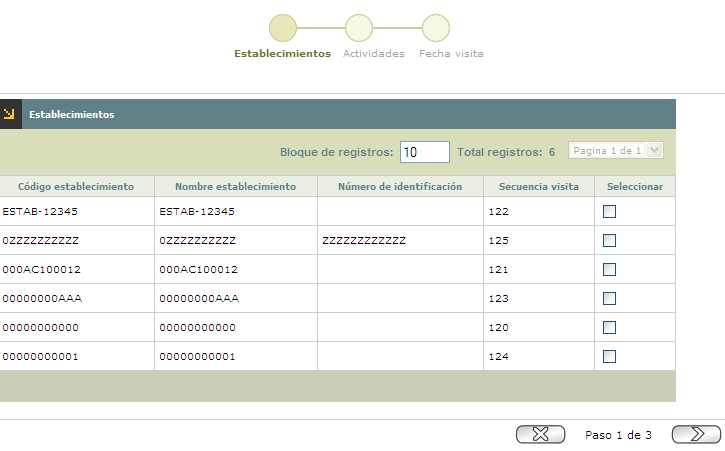
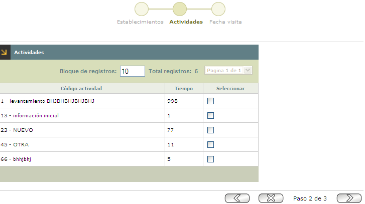
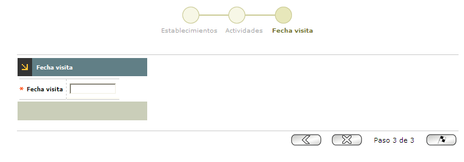

Programación de visitas a establecimientos
Programación masiva de visitas: Esta agrupación de campos muestra, todas las visitas que el sistema haya programado. Cuando el usuario selecciona esta opción, el sistema despliega un wizard de tres pasos. En el primero de ellos se seleccionan los establecimientos, con su respectiva información, a los cuales se les realizará la correspondiente visita. Los otros dos formularios son Actividades y Fecha de visita
Los bloques y la información del primer paso del wizard son:
Establecimientos:

Corresponde al segundo paso del Wizard, en el cual el usuario selecciona las actividades aplicables a cada visita.

Es el tercer paso del Wizard y alli se diligencia la fecha en la cual la entidad realizará la visita al establecimiento.
 El formulario cuenta con botones en la parte inferior derecha que le permiten al usuario Cancelar, para volver al formulario inicial Retroceder y Avanzar al anterior o siguiente paso del wizard.